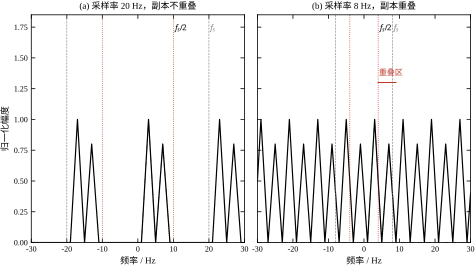
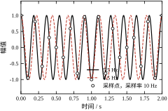
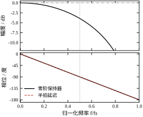
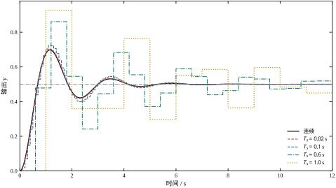
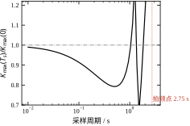

第 3 章把系统写成 \dot{\boldsymbol{x}}=A\boldsymbol{x}+B\boldsymbol{u}，并用矩阵指数给出了精确解。那个解默认输入 \boldsymbol{u}(t) 在每一个时刻都有定义——控制器随时知道该输出多少。数字控制器做不到这一点：它每隔 T_s 读一次传感器、算一次、写一次输出，两次写之间输出由保持器维持原值。于是“连续”被切成了三份：时间被离散、幅度被量化、输出被保持。
三处丢失的后果不是简单叠加，而是互相放大。时间离散让高于奈奎斯特频率的分量折叠到低频，折叠进来的东西此后再也分不出去；幅度量化把每个采样值压到有限个电平上，误差与信号一起进入控制器；保持器把离散的控制量铺成阶梯，阶梯比原信号平均晚半个采样周期，这个延迟在闭环里直接吃掉相位裕度。
模拟控制时代这三件事都不存在，所以经典控制教材可以把“采样”放在附录里讲。今天几乎所有的回路都是数字实现的，采样不是可选项，而是一层必须算进模型的动态。把它当成“理想采样、瞬时计算、理想输出”处理，误差小的时候看不出来，一旦采样周期接近闭环带宽，模型给出的稳定裕度会凭空多出十几度，实际系统就会振荡。
沿用第 3 章式 (3-1) 的三阶对象，加一个比例增益 K=0.5 的单位反馈。连续域算出的相位裕度是 21.36^\circ，穿越频率 \omega_c\approx2.36 rad/s。这个裕度本来就不宽裕，任何额外滞后都很敏感。
现在把控制器换成数字实现，计算周期取 T_s=0.1 s（即 10 Hz）。零阶保持器在穿越频率处额外引入 \omega_cT_s/2=0.118 rad，即 6.77^\circ 的相位滞后。控制器参数一个都没改，相位裕度却从 21.36^\circ 掉到 14.59^\circ。若把计算周期改成 T_s=1 ms（1 kHz），额外滞后只有 0.068^\circ，可以忽略。
同一套代码、同一个对象，仅仅因为“多久算一次”，稳定裕度差了将近 6.7^\circ。这 6.7^\circ 不是数值误差，也不能靠调增益补回来——调大增益会把穿越频率推高，滞后反而更大。它只能靠缩短采样周期或改用相位超前的校正来换。采样周期是一个设计参数，不是实现细节，这是本章最想建立的第一条认识。
第二件事发生在采样之前。传感器信号里若混有 900 Hz 的开关噪声，而采样率是 1 kHz，那么这个噪声在采样后不会消失，它会以 100 Hz 的形式出现在数据里——正好落在控制带宽之内。此后再怎么滤波，也无法把 100 Hz 的“真信号”和“900 Hz 折过来的假信号”分开，因为采样点上它们一模一样。这就是混叠，它只能靠采样之前的模拟滤波器防住。
第一，采样点上相同的序列可以来自完全不同的信号。 取采样率 10 Hz，分别采样 5.5 Hz 与 4.5 Hz 的两个余弦。脚本在 200 个采样点上逐点比较，最大差 1.23\times10^{-13}，是双精度舍入；而两条连续波形在同一时间段内的最大差是 1.976，几乎是满幅。仅凭采样数据，无法判断原始信号是哪一个。这不是算法不够聪明，而是信息在采样那一刻已经丢了，任何后处理都补不回来。
第二，保持器不只是“保持”。 零阶保持器把每个采样值维持一个周期，直觉上像“延迟半拍、幅值不变”。相位确实恰好是半拍，但幅度不是：它按 \sin(\omega T_s/2)/(\omega T_s/2) 衰减，在 f=f_s/2 处衰减到 0.6366，即 -3.92 dB；在 f=f_s 处严格为零。一个 1 kHz 采样的回路，若在 400 Hz 处还有可观增益，保持器已经把这个频段的幅度削掉了 0.36 dB 左右，相位拖后 28.6^\circ。只记“半拍延迟”会低估它的影响。
第三，离散模型判稳不等于采样点之间没有剧烈运动。 对三阶对象取 T_s=2 s、K=0.7，离散闭环极点模最大 0.5529，按采样点判据稳定；但把区间内的连续轨迹算出来，输出最大值是 0.9637，比采样点上的最大值 0.8950 高 7.7\%。极端情况下，采样点恰好落在纹波的谷底，看起来风平浪静，实际器件已经在过压边缘。采样系统必须在两个层面上检查：采样点上的稳定性，以及采样点之间的包络。
本章的一句话核心是：采样把连续信号的频谱以 f_s 为周期复制，混叠是复制件重叠；保持器把离散值铺成阶梯，代价是半拍延迟与 sinc 型幅度衰减；采样周期必须按闭环带宽选，而不是按“算得过来”选。
路线如下。§4.2 建立理想采样、频谱延拓、混叠、零阶/一阶保持器与量化的数学描述；§4.3 推导采样定理、保持器频响、采样对闭环稳定性的影响，并给出临界增益随采样周期变化的完整曲线；§4.4 把连续模型转成可执行的离散算法，给出采样周期选择流程与多速率处理的要点；§4.5 讨论工程上做不到“理想带限”时怎么办，以及五条适用边界；§4.6 用混叠、频响、闭环响应三组实验逐项验证，并做变异测试；§4.7 收束成十条常见错误与十问自测。
需要提前划清边界。本章只讨论均匀采样、单速率、线性保持器。非均匀采样、多速率滤波器组、sigma-delta 调制的稳定性分析分别属于第 84–86 章数字控制实现与第 14 章滤波器设计的范围；采样对辨识的影响放在第 16 章实验设计里讲；离散化方法本身的比较（前向/后向差分、双线性、零极点匹配）是第 6 章的主题，本章只在必要处引用结论。
把连续信号 x(t) 每隔 T_s 取一个值，得到序列 x(kT_s)。为了在频域里分析，数学上把它写成一个冲激串与 x(t) 的乘积：
x_s(t)=x(t)\sum_{k=-\infty}^{\infty}\delta(t-kT_s) =\sum_{k=-\infty}^{\infty}x(kT_s)\,\delta(t-kT_s) \tag{4-1}
这个模型是理想化的：冲激宽度为零、幅度无穷大，任何实际 ADC 都做不到。但它的频谱结论对实际采样同样成立，因为实际采样只相当于在理想采样之后加一个宽度有限的“孔径”卷积，那是 §4.2.6 要处理的修正项。先用理想模型把结构看清，再补修正，比一上来就陷入器件细节更有效。
式 (4-1) 里有两个容易混淆的量。采样周期 T_s 是两次采样之间的时间，单位是秒；采样率 f_s=1/T_s 是每秒采样次数，单位是赫兹。后文一律用 T_s 描述时间间隔、用 f_s 描述频率，避免“采样频率是 0.001”这类量纲错误。
式 (4-1) 的傅里叶变换给出本章最重要的一条结论：
X_s(\mathrm{j}\omega)=\frac{1}{T_s}\sum_{k=-\infty}^{\infty}X\big(\mathrm{j}(\omega-k\omega_s)\big), \qquad \omega_s=\frac{2\pi}{T_s} \tag{4-2}
它的含义是：采样不改变频谱的形状，只把它以 \omega_s 为间隔复制无穷多份，并把幅度统一乘上 1/T_s。 原来在 0 附近的那一份叫基带，其余叫副本。副本不是噪声，也不是计算误差，它们是采样这一操作在数学上必然产生的东西——只要时间被离散，频谱就一定是周期的。
如果基带与副本互不重叠，用一个理想低通把 |\omega|<\omega_s/2 的部分取出来，就能原样恢复 X(\mathrm{j}\omega)，从而恢复 x(t)。如果它们重叠，重叠区的值是两个（或多个）不同频率分量的叠加，无论用什么滤波器都无法拆开——这就是混叠。
用脚本里的双音信号看得最清楚：3 Hz 与 7 Hz 两个分量，总带宽到 9 Hz。取 f_s=20 Hz 时，副本落在 13、17、23、27 Hz 等位置，与基带的 3、7 Hz 相距至少 4 Hz，互不干扰；取 f_s=8 Hz 时，副本移到 1、5、11、15 Hz，其中 5 Hz 的副本与基带 3–9 Hz 的部分重叠，1 Hz 的副本直接把 7 Hz 分量“搬”到了 1 Hz。图 4-1 画出了这两种情形。

图 4-1 的两个面板共用同一基带谱，差别只在 f_s。左图里虚线标出 f_s/2=10 Hz，基带最高到 9 Hz，刚好在虚线左侧，副本从 11 Hz 才开始，中间留了 2 Hz 的空隙。右图里 f_s/2=4 Hz，基带从 1 Hz 一直延伸到 9 Hz，虚线穿过了谱峰本身，副本与基带在 4–9 Hz 之间叠加，叠加后的幅度不再是原信号的幅度。注意右图的谱在重叠区并没有“变平”或“变宽”得很有规律，它是两条不同形状的谱逐点相加，靠肉眼无法反推出原谱。
采样定理：若 x(t) 的频谱在 |f|>f_{\max} 处严格为零，且采样率满足
f_s>2f_{\max}, \tag{4-3}
则 x(t) 可以由其采样序列唯一重构。
2f_{\max} 称为奈奎斯特率，f_s/2 称为奈奎斯特频率。式 (4-3) 用的是严格大于，不是大于等于：当 f_s=2f_{\max} 时，若信号在 f_{\max} 处恰好有分量，采样点可能全部落在该分量的零点上（例如 \sin(\pi f_s t) 在 t=kT_s 处恒为零），信息仍然丢失。工程上不会卡在这个边界上，通常取 f_s\ge(2.5\sim5)f_{\max}。
定理的成立依赖三个前提，而这三个前提在工程上一个都无法严格满足。
前提一，信号严格带限。 任何有限长、有限能量的真实信号都不可能严格带限，因为时域有限意味着频域无限延伸。传感器的热噪声、开关电源的尖峰、数字电路的边沿，都会把能量铺到很高的频率。所谓“带限”只能是“在我们关心的频段内足够小”。
前提二，记录无限长。 定理的重构公式要对全部 k\in(-\infty,\infty) 求和。实际只能拿到有限长度的记录，两端必然有截断误差。
前提三，重构用理想低通。 理想低通的冲激响应是 sinc 函数，它在 t<0 时不为零，是非因果的，物理上无法实时实现；而且 sinc 的旁瓣衰减很慢，对采样时刻的微小抖动极其敏感。
三个前提都不成立，定理却没有失效——它给出的是一个上界：满足条件时可以无损重构；不满足时必然有损，但损失多少要看具体信号与采样率。工程做法的实质是：用抗混叠滤波器把“带限”做成近似，用有限长记录接受边缘误差，用因果滤波器接受相位失真，然后验证残余误差是否在指标之内。这条思路贯穿 §4.5。
采样定理最容易被误用成一个数字判据：“信号最高 1 kHz，采样 2 kHz 就够了。” 这句话在实验室里成立，在装了变频器的柜子里不成立，因为柜子里的 1 kHz 信号上还叠着 20 kHz 的开关纹波，后者会以各种差频折回低频。判断是否够用，要看的不是“有用信号的最高频率”，而是“进入 ADC 之前的信号里，超过 f_s/2 的分量还有多大”。这个区别是 §4.5.1 的主题。
一个具体的例子能说明这种误用有多隐蔽。某转速信号基频 1 kHz，叠加了 20 kHz 的开关纹波，采样率取 2 kHz。按“1 kHz 小于 2 kHz，够用”的判断不会有任何报警，但 20 kHz 在 2 kHz 采样下满足 k=10，混叠到 0 Hz——纹波变成了一个缓慢变化的直流偏置。现场看到的现象是“转速零点随时间漂移”，去查传感器、查接地、查温漂，都查不出问题，因为干扰源在频域上已经伪装成了直流。若把采样率改成 3.3 kHz，20 kHz 折到 200 Hz，至少不再伪装成直流；但只要采样率与纹波频率成整数比（10、8、5 倍都行），它就仍然折到 0 Hz。所以靠“换一个采样率”躲不开，真正稳妥的做法是在 ADC 前加一级截止频率 1 kHz 的模拟低通，把 20 kHz 压到噪声底以下。
这段历史也值得记住：奈奎斯特在 1928 年讨论电报信号的传输带宽，香农在 1949 年给出严格的重构定理，科捷利尼科夫在 1933 年独立得到相同结论。三个人的出发点完全不同——一个关心信道容量，一个关心信息度量，一个关心信号逼近——但得到的是同一个 2f_{\max}。这说明采样定理不是某个工程技巧，而是“离散表示连续”这件事的本质约束，任何试图绕开它的方案（包括各种“超分辨率”算法）都只是在利用先验信息，而不是增加信息。
一个频率为 f 的分量，采样后会落到哪个频率上？把 f 对 f_s 取余，再把结果折到 [0,f_s/2] 之内：
f_a=\left|f-k f_s\right|,\qquad k=\operatorname{round}\!\left(\frac{f}{f_s}\right) \tag{4-4}
式 (4-4) 的几何解释是：把 f 沿频率轴按 f_s 的整数倍来回折叠，直到落进基带。k 取最接近的整数，是因为要折叠到离原点最近的那个副本上。
取 f_s=10 Hz，脚本对六个频率逐一验证，结果见表 4-1。最后一列是“在该频率上采到的序列”与“在混叠频率上采到的序列”逐点相减的最大绝对值，全部在 10^{-13} 量级，即双精度舍入；作为对照，两条连续波形在同一时段的差达到 1.976。
表 4-1 混叠频率与采样点上的重合（f_s=10 Hz）
| 原频率 f / Hz | 混叠频率 f_a / Hz | 采样点最大差 | 连续波形最大差 |
|---|---|---|---|
| 5.5 | 4.5 | 1.23\times10^{-13} | 1.9756 |
| 6.5 | 3.5 | 1.82\times10^{-13} | 1.9774 |
| 9.5 | 0.5 | 1.88\times10^{-13} | 1.9864 |
| 12.5 | 2.5 | 2.35\times10^{-13} | 1.8157 |
| 15.5 | 4.5 | 2.47\times10^{-13} | 1.9953 |
| 20.5 | 0.5 | 3.98\times10^{-13} | 1.9971 |
表 4-1 里有两件事值得注意。第一，混叠是双向的。 5.5 Hz 折到 4.5 Hz，4.5 Hz 本身采样后也停在 4.5 Hz；两个不同来源的信号落在同一个频点上，叠加之后无法分离。第二，高次谐波同样会折回。 20.5 Hz 是基带的四倍多，仍然折到 0.5 Hz；变频器、开关电源产生的高频分量正是以这种方式污染低频测量。
图 4-2 用两条曲线把这件事画了出来。5.5 Hz 与 4.5 Hz 的余弦在连续时间上相位完全不同，但每隔 0.1 s 取一个点，两组点严格重合。如果只看采样数据，会误以为信号是 4.5 Hz；如果按 4.5 Hz 去设计控制器，控制量在真实的 5.5 Hz 对象上会产生错误的作用方向。

图 4-2 的采样点用空心圆标出，圆点全部落在两条曲线的交点上。注意交点并不是“两条曲线相等”的位置，而是“两条曲线在采样时刻恰好同相”的位置；在采样时刻之间，它们的差最大可以到 2。这正是 §4.1.3 所说“信息在采样那一刻已经丢了”的图形版本。
数字控制器算出 u[k] 之后，执行机构需要在这个周期内保持一个物理量。最常见的做法是零阶保持：整个周期内输出恒定，等于本周期的计算值。它的冲激响应是一个高度为 1、宽度为 T_s 的矩形脉冲，传递函数为
G_{\mathrm{ZOH}}(s)=\frac{1-\mathrm{e}^{-sT_s}}{s} \tag{4-5}
式 (4-5) 在 s=0 处的极限是 T_s，即直流增益等于采样周期。这看起来不符合“保持器不改变幅值”的直觉，原因是冲激响应的面积是 T_s，而理想采样的冲激面积是 1；两者相乘正好抵消，所以“采样 + 保持”整条链路的直流增益为 1。分析保持器时如果不把采样器的 1/T_s 一起算进来，就会得到“增益随 T_s 变化”的错误结论。
把 s=\mathrm{j}\omega 代入，得到频响：
G_{\mathrm{ZOH}}(\mathrm{j}\omega) =\mathrm{e}^{-\mathrm{j}\omega T_s/2}\cdot\frac{2\sin(\omega T_s/2)}{\omega} =\mathrm{e}^{-\mathrm{j}\omega T_s/2}\cdot T_s\cdot\frac{\sin(\omega T_s/2)}{\omega T_s/2} \tag{4-6}
式 (4-6) 把保持器的作用拆成了两个因子。相位因子 \mathrm{e}^{-\mathrm{j}\omega T_s/2} 是纯延迟 T_s/2，这就是“半拍延迟”的出处；它是精确的，不是近似。幅度因子是 sinc 形，在 \omega T_s/2=k\pi 处为零，即 f=kf_s；在 f=f_s/2 处为 2/\pi=0.6366。相位因子可以并进回路延迟一起算，幅度因子不能——它随频率衰减，会改变幅频曲线的形状，进而改变穿越频率。
零阶保持的阶梯在采样点之间是平的，重构误差的主项与 T_s 成正比。若允许用当前值和上一拍的斜率做线性外推，就得到一阶保持器：
G_{\mathrm{FOH}}(s)=\frac{(1-\mathrm{e}^{-sT_s})^2}{T_s s^2} \tag{4-7}
式 (4-7) 的分子是平方，说明它等于零阶保持器再串一个 (1-\mathrm{e}^{-sT_s})/(T_s s) 环节。这个环节在低频近似为 1，不改变直流增益；高频按 1/\omega 衰减，所以 FOH 的幅度比 ZOH 下降得更快，相位也比单纯的半拍延迟多滞后一些。直观上，一阶保持在每个周期内画一条斜线，比水平阶梯更贴近原信号，因此重构误差的主项降为 T_s^2。
工程上还有两个容易混淆的版本。外推型一阶保持用当前值和上一拍的差分向前画斜线，是因果的，但遇到输入突变会产生过冲；插值型一阶保持（线性插值）用当前值和下一拍的值连线，效果更好，但需要提前一拍知道未来值，实际实现时相当于多了一个采样周期的延迟。脚本 §4.6 用的线性插值，所以表 4-7 中的 FOH 误差对应“插值型”，不能直接套到外推型上。
更高阶的保持器（二阶、样条）在理论上还能再降一阶误差，但实现复杂、对噪声更敏感，控制回路里几乎不用。实际工程的做法通常是：用零阶保持，把采样率提高，再用一个一阶或二阶重构滤波器平滑输出。保持器的阶数不是越高越好，它和采样率、噪声水平是一组需要一起选的参数。
一阶保持的噪声代价可以定量看出来。外推型需要计算差分 (x[k]-x[k-1])/T_s，若两个样本各自带独立噪声 \sigma，差分的噪声是 \sqrt{2}\sigma，再除以 T_s，等效到斜率上的噪声按 1/T_s 放大。T_s 减半，斜率噪声翻倍；而重构误差按 T_s^2 减小。两者相抵，存在一个最优 T_s：再小下去，误差不再由逼近精度决定，而由噪声决定。这解释了一个常见现象——把采样率从 1 kHz 提到 10 kHz，一阶保持的输出不但没有更平滑，反而更“毛”。同样的道理适用于数字微分：第 44 章的微分项必须加低通滤波，否则量化噪声会被 1/T_s 放大到不可用。
时间离散之外，幅度也要离散。N 位 ADC 把满量程分成 2^N 个电平，理想情况下量化误差在 \pm\frac{1}{2} LSB 内均匀分布，信噪比为
\mathrm{SNR}_{q}=6.02N+1.76\ \mathrm{dB} \tag{4-8}
式 (4-8) 的系数来自 20\log_{10}2=6.02：每多一位，信噪比提高约 6 dB。表 4-2 列出常用位数的理论值，实际器件还要再扣掉有效位数（ENOB）的损失，通常比理论值低 1–2 位。
表 4-2 量化位数的理想信噪比
| 位数 | 8 | 10 | 12 | 16 | 24 |
|---|---|---|---|---|---|
| SNR / dB | 49.92 | 61.96 | 74.00 | 98.08 | 146.24 |
另一项常被忽略的误差是孔径抖动。采样并不是在理想瞬间完成的，采样保持电路有一个很短但不为零的孔径时间，其起点在每次采样时都有随机抖动 \sigma_t。对一个频率为 f、幅度为 A 的正弦，抖动引起的幅度误差近似为 A\cdot2\pi f\sigma_t，于是信噪比上限为
\mathrm{SNR}_{j}=-20\log_{10}\!\left(2\pi f\sigma_t\right) \tag{4-9}
式 (4-9) 说明抖动的影响与信号频率成正比：同样的抖动，在高频上损失大得多。表 4-3 给出三档抖动、五个频率下的上限。
表 4-3 孔径抖动决定的信噪比上限（dB）
| 频率 / Hz | \sigma_t=1 ns | \sigma_t=100 ps | \sigma_t=10 ps |
|---|---|---|---|
| 100 | 124.04 | 144.04 | 164.04 |
| 10^3 | 104.04 | 124.04 | 144.04 |
| 10^4 | 84.04 | 104.04 | 124.04 |
| 10^5 | 64.04 | 84.04 | 104.04 |
| 10^6 | 44.04 | 64.04 | 84.04 |
把表 4-2 与表 4-3 并排看，可以得出一个实用判据：抖动指标要和分辨率匹配。 12 位 ADC 的理论信噪比是 74 dB，在 1 kHz 处要让它不成为瓶颈，抖动必须小于 31.76 ns；16 位要求小于 1.99 ns。反过来说，一个 1 ns 抖动的采样时钟，在 1 kHz 处只能支撑约 104 dB，即大约 17 位；再高的位数在 1 kHz 上已经没有意义。
实际器件用有效位数（ENOB）描述这件事，定义为 \mathrm{ENOB}=(\mathrm{SINAD}-1.76)/6.02，其中 SINAD 是实测的信噪加失真比。一颗标称 12 位的 ADC，若 SINAD 只有 68 dB，ENOB 就是 11.0 位，与标称值差一位；若板上开关电源的纹波耦合进模拟前端，SINAD 掉到 56 dB，ENOB 只剩 9.0 位。标称位数是上限，ENOB 才是可用的位数，两者之间的差距几乎全部来自前端设计与时钟质量。
还有一条容易被忽略的浪费：信号没有用满量程。若信号只占满量程的 20\%，相当于主动丢掉 \log_2 5\approx2.32 位。很多系统为了“保护 ADC 不饱和”把量程放大到实际信号的五倍，结果 16 位器件只当 13.7 位用。正确做法是用可编程增益把信号调到接近满量程，再用饱和检测与硬件限幅防止越界，而不是靠留大余量。
量化误差与抖动误差的性质不同。量化误差是确定性的，对周期信号会表现为谐波失真；抖动是随机的，表现为噪声底抬高。两者都会进入控制器，但前者可以通过抖动（dither）或过采样打散，后者只能靠更好的时钟和更短的孔径改善。这条区别在第 14 章滤波器设计里还会用到。
式 (4-2) 不是假设，而是冲激串的傅里叶级数展开的直接结果。周期为 T_s 的冲激串可以写成
\sum_{k=-\infty}^{\infty}\delta(t-kT_s) =\frac{1}{T_s}\sum_{k=-\infty}^{\infty}\mathrm{e}^{\mathrm{j}k\omega_s t}, \qquad \omega_s=\frac{2\pi}{T_s}
把它与 x(t) 相乘，相当于对 x(t) 做一次频率调制：每一项 \mathrm{e}^{\mathrm{j}k\omega_s t}x(t) 的频谱，是 X(\mathrm{j}\omega) 整体右移 k\omega_s。把所有项加起来，就得到式 (4-2) 的无穷和。系数 1/T_s 来自傅里叶级数的常数项，它保证采样前后平均功率的关系。
这个推导解释了两件事。第一，副本的间隔由 T_s 唯一决定，与信号本身无关；想搬动副本，只能改采样周期。第二，“采样后频谱是周期的”不是近似，它在数学上严格成立，哪怕信号只有一段、记录只有几秒；有限记录破坏的是“能不能把副本完全滤掉”，而不是“副本是否存在”。
若基带与副本不重叠，用一个截止频率为 f_s/2、通带增益为 T_s 的理想低通滤波，就能取出基带。理想低通的冲激响应是 sinc 函数，于是重构公式为
x(t)=\sum_{k=-\infty}^{\infty}x(kT_s)\, \operatorname{sinc}\!\left(\frac{t-kT_s}{T_s}\right), \qquad \operatorname{sinc}(u)=\frac{\sin(\pi u)}{\pi u} \tag{4-10}
式 (4-10) 说明重构不是“把点连起来”，而是让每个采样点贡献一个 sinc 波形，所有 sinc 叠加成原信号。sinc 在 u=0 处为 1、在其他整数处为零，所以重构信号在采样时刻严格等于采样值；在两个采样点之间，它是所有 sinc 旁瓣的叠加，形状由整段数据共同决定，不只由相邻两点决定。
这也解释了为什么“线性插值”与“理想重构”的误差不能用“点够不够密”来简单判断。线性插值只看相邻两点，误差主项与二阶导数成正比；sinc 重构用了全部点，对带限信号可以做到零误差。实际系统拿不到无穷长的数据，只能用有限长的加窗 sinc 或滤波器近似，于是误差重新出现，但量级比线性插值小得多。
把求和截断到 \lvert k\rvert\le N 之后，误差的分布值得注意。每个被丢掉的 sinc 旁瓣按 1/\lvert t-kT_s\rvert 衰减，速度很慢，所以误差在靠近记录两端的一两个周期内最大，并缓慢向内部渗透，不会随 N 增大而迅速消失。这意味着“多采一段数据就能把边缘误差压掉”的想法只在旁瓣已经衰减到足够小的时候成立。加窗可以压低旁瓣，代价是主瓣展宽、分辨率下降，窗的形状就是在“旁瓣泄漏”与“主瓣宽度”之间做取舍。做频谱分析时选窗、做重采样时选滤波器，本质上都是这一件事。
式 (4-6) 的幅度因子可以归一化为
\frac{\left|G_{\mathrm{ZOH}}(\mathrm{j}\omega)\right|}{T_s} =\left|\frac{\sin(\omega T_s/2)}{\omega T_s/2}\right| =\left|\operatorname{sinc}\!\left(\frac{f}{f_s}\right)\right| \tag{4-11}
相位则严格等于 -\omega T_s/2=-\pi f/f_s，与频率成线性关系，这正是纯延迟 T_s/2 的相位。表 4-4 给出几个关键点的数值，图 4-3 画出整条曲线。
表 4-4 零阶保持器的幅频与相频
| \omega T_s | 频率位置 | 幅度 / dB | 相位 / 度 |
|---|---|---|---|
| 0.1 | 0.016f_s | -0.0036 | -2.865 |
| 0.2 | 0.032f_s | -0.0145 | -5.730 |
| 0.4 | 0.064f_s | -0.0580 | -11.459 |
| 0.5 | 0.080f_s | -0.0907 | -14.324 |
| 1.0 | 0.159f_s | -0.3650 | -28.648 |
| \pi | 0.5f_s | -3.9224 | -90.000 |
| 2\pi | f_s | -\infty | -180.000 |

读图 4-3 要抓住三点。第一，相频的两条线完全重合。 黑色实线是零阶保持器的相位，红色虚线是 -\pi f/f_s，两者在 0\le f\le f_s/2 上逐点相同，说明“半拍延迟”在相位上是精确等式，不是一阶近似。第二，幅频不是平的。 在 f=0.1f_s 处只衰减 0.0145 dB，可以忽略；到 f=0.5f_s 已经衰减 3.92 dB，接近一半功率。第三，f=f_s 处有一个传输零点。 这一点的物理含义是：周期恰好等于采样周期的正弦，在每个采样时刻都取到同一个值，保持器输出恒为常数，交流分量完全消失。
半拍延迟这个结论有一个常被忽略的前提：它描述的是平均延迟，不是“每个采样值都晚半拍”。零阶保持的实际输出在周期内是平的，阶跃响应的前沿立即跳变、后沿晚一整拍，平均效果等价于半拍。用相位裕度算稳定性时用半拍是对的；用“控制器看到的信号晚了半拍”来描述因果性则是错的，后者会让读者以为可以提前补偿。
式 (4-11) 的零点出现在
\omega T_s=2k\pi\quad\Longrightarrow\quad f=kf_s, \qquad k=1,2,3,\ldots \tag{4-12}
这些零点对闭环的影响分两种情况。若回路增益在这些频率上已经很小（大多数控制回路在 f_s 处增益远低于 0 dB），零点无关紧要，保持器近似为纯延迟。若回路在 f_s 附近仍有可观增益（高带宽回路、多速率系统、机械共振恰好落在该频段），零点会在那个频点把开环增益拉到零，幅频曲线出现一个深谷，相位在谷底附近快速变化。此时用“纯延迟 + 恒定增益”的模型会完全算错裕度。
还有一种更隐蔽的情形：采样率取得很低，使得保持器的幅频衰减恰好抵消了对象在某个频段的增益上升。从采样数据看，闭环变得“更稳”了；实际上，被抵消的那部分动态仍然存在于采样点之间，只是没有出现在数据里。第 4.3.6 节的临界增益曲线会给出一个具体例子：T_s=2 s 时算出的临界增益反而高于连续域，这不是鲁棒性变好，而是采样点恰好躲开了振荡的峰值。
把连续对象用零阶保持离散化，得到 G_d(z)，单位反馈比例控制的闭环特征方程为
1+K G_d(z)=0 \tag{4-13}
它的根全部落在单位圆内时，采样点上的闭环稳定。对本章的三阶对象，连续域的临界增益由 Routh 判据给出：特征多项式 s^3+2.1s^2+6.2s+8(1+K) 的临界条件是 2.1\times6.2=8(1+K)，即 K_{\max}=0.6275。离散域的临界增益用二分法逐点求出，结果见表 4-5。
表 4-5 采样周期对临界比例增益的影响（三阶对象）
| T_s / s | K_{\max} | K_{\max}/K_{\max}(0) | 临界振荡 / rad/s |
|---|---|---|---|
| 0（连续） | 0.62750 | 1.0000 | — |
| 0.02 | 0.61484 | 0.9798 | 2.480 |
| 0.05 | 0.59767 | 0.9525 | 2.466 |
| 0.10 | 0.57329 | 0.9136 | 2.444 |
| 0.20 | 0.53728 | 0.8562 | 2.404 |
| 0.50 | 0.49734 | 0.7926 | 2.304 |
| 1.00 | 0.60151 | 0.9586 | 2.159 |
| 2.00 | 0.73033 | 1.1639 | 1.571 |
表 4-5 的前六行符合直觉：采样越慢，可用增益越低。从 T_s=0.02 s 到 0.5 s，临界增益从 0.6148 降到 0.4973，损失约 19\%。这个损失不是线性的：T_s 从 0.02 增到 0.05（2.5 倍），增益只降 2.8\%；从 0.2 增到 0.5（2.5 倍），降 7.4\%。原因是相位滞后 \omega_cT_s/2 随 T_s 线性增长，而临界点对相位的变化率在裕度变小后急剧上升。
把增益损失与相位损失对照，可以得到一个便于现场估算的数量级。取 K=0.5 的工作点，T_s=0.1 s 时半拍延迟在穿越频率处吃掉 6.769^\circ；同一采样周期下，临界增益相对连续域下降 8.64\%。两者相除约合每度相位对应 1.3\% 的可用增益。这个比例不是普适常数：它取决于开环相位在穿越频率附近的斜率，裕度越小斜率越陡，同样的相位损失换来的增益降幅越大。所以它适合用来判断“这个采样周期大概能吃多少裕度”，不适合用来做精确设计。
后两行破坏了单调性。T_s=1 s 时临界增益回到 0.6015，T_s=2 s 时升到 0.7303，比连续域还高 16\%。这不是数值错误，也不是“采样改善了稳定性”，下一小节专门解释。
同样的现象在时域上更直观。换一个阻尼比 0.4 的二阶对象 G_2(s)=4/(s^2+1.6s+4)，取 K=1，连续闭环的稳态值是 0.5，超调 39.60\%，首个峰值在 1.158 s，2\% 调节时间 4.866 s。把控制器改成采样实现，指标随 T_s 的变化见表 4-6，响应曲线见图 4-4。
表 4-6 采样周期对二阶对象阶跃响应的影响（K=1，稳态 0.5）
| T_s / s | 超调 / % | 峰值时刻 / s | 2\% 调节 / s | \max\lvert y\rvert |
|---|---|---|---|---|
| 0（连续） | 39.597 | 1.158 | 4.866 | 0.698 |
| 0.02 | 40.606 | 1.160 | 4.920 | 0.703 |
| 0.10 | 44.480 | 1.200 | 5.100 | 0.722 |
| 0.30 | 56.344 | 1.200 | 7.500 | 0.782 |
| 0.60 | 72.211 | 1.200 | 14.400 | 0.861 |
| 1.00 | 85.417 | 1.000 | >20 | 0.927 |
| 1.50 | 发散 | — | — | 6.34\times10^{2} |

表 4-6 里有一处值得停下来看：T_s 从 0.02 s 增到 0.1 s，超调从 40.6\% 涨到 44.5\%，只多了 3.9 个百分点；从 0.1 增到 0.6 s，超调从 44.5\% 涨到 72.2\%，多了 27.7 个百分点。采样周期只增大了 6 倍，超调却几乎翻倍。原因是闭环的自然频率是 \sqrt{8}=2.828 rad/s，对应周期 2.221 s；当 T_s=0.6 s 时，一个振荡周期内只剩 3.7 个采样点，控制器已经“看不清”振荡的相位。临界采样周期由脚本二分得到 T_s=1.2665 s，超过它离散闭环就失稳，此时一个振荡周期内只剩 1.75 个采样点。
图 4-4 也显示出一个细节：T_s=1.0 s 的曲线在 t=1 s 处才第一次更新控制量，峰值时刻被“吸”到 1.0 s，但峰值高度 0.927 反而比 T_s=0.6 s 的 0.861 更大。这说明采样不仅改变数值，还改变事件发生的时刻；用连续域的“峰值时间”去对照离散响应，必须按采样网格重新定义，否则会得出“峰值提前了”的错误结论。
表 4-5 后两行的回升，来自离散化对相位的“折叠”。连续回路的临界振荡频率在 2.4 rad/s 附近，对应周期 2.6 s。当 T_s 接近这个周期的一半或整数倍时，采样点落在振荡波形的特定相位上，离散模型看到的相位差被减去若干个 2\pi，等效延迟变短，临界增益就回升了。
图 4-5 把整条曲线画了出来，横轴是对数刻度。曲线在 T_s\approx0.5 s 处到达最低点 0.79 倍，随后回升，在 T_s=2 s 附近超过 1，并在 T_s=2.75 s 的拍频点附近出现一个尖峰——2.75 s 正是第 3 章式 (3-1) 复极点的拍频周期 2\pi/2.2845。
把折叠写成频率关系，能看清回升的条件。离散闭环极点若落在 z=e^{\mathrm{j}\theta}，它在连续域对应的表观频率是 \theta/T_s，而 \theta 只能取 [0,\pi]，所以离散模型能表示的频率上限就是 \pi/T_s。当连续回路的临界振荡频率 \omega_d 超过这个上限时，采样无法区分 \omega_d 与 \omega_s-\omega_d，离散模型看到的振荡被折到低处，临界点上的相位条件随之改变。表 4-5 的最后一列记录了这件事：T_s=0.5 s 时临界振荡 2.304 rad/s，T_s=1 s 时 2.159 rad/s，到 T_s=2 s 时降到 1.571 rad/s，恰好等于 \pi/T_s。此时极点被推到奈奎斯特频率上，离散模型对相位的分辨能力已经用到极限，继续增大增益时极点只能沿单位圆滑向低频侧，稳定边界因此回升而不是继续下降。回升之所以看起来突兀，是因为临界频率一旦被 \pi/T_s 锁住，就只能在下一个拍频点跳变，中间没有连续过渡。

这张图不能读成“采样周期越大越稳”。它说明的是：离散模型给出的稳定边界，是采样点上的边界；采样点之间的行为不在这个边界里。 在 T_s=2 s、K=0.7 的算例中，离散极点模最大 0.5529，判稳；但把区间内的连续轨迹算出来，输出峰值是 0.9637，比采样点上的 0.8950 高 7.7\%。若器件耐压按采样点数据留 5\% 余量，实际就会越界。
工程上的结论不是“避开拍频点”这么简单，而是：不要用离散模型的稳定边界去替代采样间验证。 正确做法是先用离散模型选参数，再用包含保持器的连续仿真检查区间包络；两者都过，才算过。这条检查在 §4.6.6 的清单里列为第四项。
零阶保持的误差可以用一阶导数的界估计：在一个周期内，真实信号偏离保持值的最大量不超过 \frac{T_s}{2}\max|x'|。线性插值的误差用二阶导数的界：不超过 \frac{T_s^2}{8}\max|x''|。两者相差一个 T_s 因子，这就是“一阶保持比零阶保持高一阶”的准确含义。
脚本用 1 Hz 与 3 Hz 的双音信号做了实测，采样率从 10 Hz 取到 100 Hz，结果见表 4-7。
表 4-7 零阶保持与线性插值的重构均方根误差
| f_s / Hz | ZOH 均方根误差 | 插值均方根误差 | 比值 |
|---|---|---|---|
| 10 | 0.330096 | 0.068464 | 4.821 |
| 20 | 0.170380 | 0.018028 | 9.451 |
| 40 | 0.085815 | 0.004566 | 18.795 |
| 100 | 0.034236 | 0.000733 | 46.693 |
表 4-7 的缩放规律很清楚：采样率翻一倍，ZOH 误差减半（10\to20 Hz 时 0.330\to0.170，比值 0.516；20\to40 Hz 时比值 0.504），插值误差降到约四分之一（对应比值 0.263 与 0.253）。最后一列 40\to100 Hz 是 2.5 倍，ZOH 误差比值 0.399、插值 0.161，正好分别接近 1/2.5 与 1/2.5^2。三组数据合起来验证了两个理论阶次：ZOH 是一阶，插值型 FOH 是二阶。比值从 4.8 涨到 46.7，说明采样越密，一阶保持的优势越大。这也解释了为什么高精度数据采集系统愿意多花一个周期的延迟去做插值，而普通控制回路用零阶保持就够了——后者的采样率通常远高于信号带宽，ZOH 误差已经小到可以忽略。
抗混叠滤波器是采样之前唯一的防线。它的任务不是“滤掉噪声”，而是“把 f_s/2 以上的分量压到 ADC 分辨率以下”。N 阶 Butterworth 低通的幅频为
\left|H(\mathrm{j}\omega)\right|=\frac{1}{\sqrt{1+\left(\omega/\omega_c\right)^{2N}}} \tag{4-14}
在 f\gg f_c 时近似为 (f/f_c)^{-N}，用分贝表示就是 -20N\log_{10}(f/f_c)。要让 f_s-f_c 处的干扰衰减 A dB，所需阶数约为
N\ge\frac{A}{20\log_{10}\big((f_s-f_c)/f_c\big)} \tag{4-15}
脚本取 f_s=1 kHz、f_c=100 Hz，检查 900 Hz 处的衰减，结果见表 4-8。作为对照，把截止频率放宽到 200 Hz（通带更宽、相位滞后更小），同样检查 800 Hz 处。
表 4-8 Butterworth 抗混叠滤波器在带外的衰减（f_s=1 kHz）
| 阶数 | f_c=100 Hz，f=900 Hz | f_c=200 Hz，f=800 Hz |
|---|---|---|
| 2 | -38.17 dB | -24.10 dB |
| 4 | -76.34 dB | -48.16 dB |
| 6 | -114.51 dB | -72.25 dB |
| 8 | -152.68 dB | -96.33 dB |
表 4-8 给出一个不太直观的结论：截止频率放宽一倍，达到同样衰减所需的阶数要翻倍。 f_c=100 Hz 时 4 阶就到 -76 dB，f_c=200 Hz 时 4 阶只有 -48 dB，要做到 -96 dB 需要 8 阶。原因在式 (4-15) 的分母：(f_s-f_c)/f_c 从 9 降到 4，\log_{10} 从 0.954 降到 0.602，所需阶数增加 58\%。
实际选型还要考虑滤波器的相位滞后。8 阶 Butterworth 在 100 Hz 附近的相位滞后可以到几百度，如果把它放在闭环里面，稳定裕度会被吃光。所以抗混叠滤波器通常放在回路之外（传感器之后、ADC 之前），只影响测量通道，不影响控制通道的相位；若必须放在回路内，就要把它的相位算进开环模型，重新评估裕度。这条边界在 §4.5.2 展开。
第 3 章式 (3-30) 已经给出零阶保持下的精确离散化：把 A、B 拼成增广矩阵，取一次矩阵指数，前 n\times n 块是 A_d，右上块是 B_d。这里不重复推导，只强调三点与本章直接相关的性质。
第一，A_d=\mathrm{e}^{AT_s} 与保持器无关，B_d 与保持器有关。 无论用零阶保持、一阶保持还是冲激采样，状态本身的演化都由 \mathrm{e}^{AT_s} 决定，区别只在输入如何在一个周期内注入。所以“采样对极点的影响”是统一的，z=\mathrm{e}^{\lambda T_s} 对任何保持器都成立；“采样对零点与增益的影响”则要看保持器。
第二，D\ne0 时离散化会出现直通项。 连续系统的 D 在离散化后通常保留为 D_d=D，因为同一时刻的输入直接出现在输出上。这一点在数字实现里对应“本拍采样、本拍输出”的代数环，实际控制器往往要人为插入一拍延迟来打破它，插入之后模型必须相应修改，否则闭环极点会算错。代数环的处理在第 107 章多变量系统里展开。
第三，离散化不改变稳定性，但改变稳定裕度。 连续极点 \lambda 映射到 z=\mathrm{e}^{\lambda T_s}，左半平面映到单位圆内，所以开环稳定性不变；但闭环的稳定边界由相位裕度决定，而保持器额外贡献了半拍延迟。表 4-5 已经量化了这部分损失。
采样周期的选择不是“越快越好”，也不是“算得过来就行”，而是一个有上下界的工程决策。经验区间是
0.05\le\omega_cT_s\le0.2, \tag{4-16}
其中 \omega_c 是期望闭环带宽（穿越频率）。这个区间的两端各有依据：上界 0.2 对应半拍延迟在穿越频率处引入 0.1 rad，即 5.7^\circ 的相位损失，占常用 45^\circ 裕度的八分之一；下界 0.05 对应离散能控性矩阵的条件数开始恶化，以及量化误差与计算舍入在控制量中的占比上升。两端的详细推导见第 3 章 §3.4.4。
实际操作可以按五步走。
第一步，估带宽。 从对象的开环增益穿越频率或期望的闭环响应时间估 \omega_c。若要求调节时间 t_s，可用 \omega_c\approx4/t_s 粗估。
第二步，定区间。 由式 (4-16) 算出 T_s\in[0.05/\omega_c,\ 0.2/\omega_c]。以本章三阶对象、K=0.5 为例，\omega_c=2.36 rad/s，区间是 [0.021,\ 0.085] s。
第三步，查混叠。 确认 f_s/2 高于所有可能进入 ADC 的干扰频率，或确认抗混叠滤波器在 f_s/2 以上有足够衰减。若做不到，先改硬件，不要靠软件补。
第四步，查数值条件。 算一遍离散能控性矩阵的条件数，超过 10^6 要警惕，超过 10^{10} 不可用。这一步在第 3 章表 3-1 里有完整数据。
第五步，做采样间验证。 用包含保持器的连续仿真检查区间包络，确认没有 §4.3.6 那种“采样点判稳、区间内越界”的情况。
五步里最容易被跳过的是第三步和第五步。第三步需要硬件配合，软件工程师往往无权改；第五步需要连续仿真，而很多人只用离散模型跑一遍就交付。跳过这两步，前面三步算得再准也不足以保证现场不出问题。
在代码层面，“采样”通常不是一个函数，而是一条链：模拟滤波 → ADC 采样 → 数字滤波 → 抽取/插值 → 控制计算。每一环都有对应的库函数和陷阱。
模拟滤波必须在 ADC 之前，用运放或有源滤波器实现。它的截止频率应低于 f_s/2，阶数按表 4-8 的换算确定。软件里无法“补”这一步：一旦高频分量已经折进基带，任何数字滤波都分不开。
ADC 采样由硬件触发，代码通常只读寄存器。要注意三件事：触发时刻是否与 PWM 同步（同步可以避开开关瞬间的尖峰）、采样保持的孔径是否足够短、转换完成中断的延迟是否固定。三者都会引入附加的相位滞后，建模时应并入总延迟。
数字滤波与抽取在软件里完成。若 ADC 采样率高于控制率，需要先低通再抽取（decimation），不能直接隔点取值，否则抽取本身又引入一次混叠。抽取因子为 M 时，数字低通的截止频率应低于 f_s/(2M)。插值（interpolation）方向相反，先补零再低通，低通的作用是去掉镜像。
举一个具体的链路：ADC 以 20 kHz 采样，控制周期 2 kHz，抽取因子 M=10。抽取后的奈奎斯特频率是 1 kHz，因此数字低通的通带必须止于 1 kHz 以下。若某个干扰分量在 3.2 kHz，直接隔点取值会让它折到 \lvert3.2-2\times2\rvert=0.8 kHz，正好落在控制带宽内；先滤波再抽取，这个分量会被低通压掉。低通的阻带起点不必取在 1 kHz，而应取在“会折进关心的频段”的位置：要把 0–200 Hz 的保护带做干净，阻带就得从 2\times1-0.2=1.8 kHz 开始。这就是为什么抽取滤波器常做成过渡带很窄的高阶半带滤波器，而不是随便一个一阶低通。
插值方向的镜像是同一件事的反面。把 2 kHz 的数据插值到 20 kHz，补零会在 20k\pm f 处产生镜像，若不去掉，后续模拟输出会把镜像一起送出去。插值滤波器的通带同样止于 1 kHz，阻带从 19 kHz 开始——过渡带很宽，所以实现上比抽取滤波器容易。抽取难在过渡带窄，插值难在计算量大，这是多速率信号处理里两条基本的代价线。
重采样（把不等间隔或不同时钟域的数据统一到控制周期）要特别小心。线性插值会引入半拍到一拍的额外延迟，而且延迟随两个时钟的相位差缓慢变化，表现为低频抖动。若必须重采样，优先用“保持上一拍”而不是插值，除非插值的相位误差已经算进模型。
真实控制器从采样到输出不是瞬时的。ADC 转换、滤波、控制律计算、PWM 更新各占一段时间，合计记为 \tau_c。它与保持器的半拍延迟串联，等效为
G_{\mathrm{delay}}(s)=\mathrm{e}^{-s\left(T_s/2+\tau_c\right)} \tag{4-17}
式 (4-17) 是一个常用的简化：把分布在各环节的小延迟合并成一个纯延迟。它在 \omega(T_s/2+\tau_c)\ll1 时准确，在接近 f_s/2 时会高估相位损失（因为真实环节的相位不是严格线性的），用于稳定性评估偏保守，可以接受。
\tau_c 的量级常常被低估。以 1 kHz 控制为例，ADC 转换 2\ \mus、滤波 5\ \mus、控制计算 10\ \mus、PWM 更新等一个载波周期 50\ \mus，合计约 67\ \mus，相当于 T_s 的 6.7\%，即额外 0.067 拍延迟。与保持器的半拍相比不大，但在高带宽回路里（T_s 只有几十微秒）就不可忽略。工程上的做法是把 \tau_c 实测出来，写进模型，而不是假设为零。
多速率系统里，不同环节跑在不同周期上，延迟的算法要按最慢的一环算。例如电流环 10 kHz、速度环 1 kHz、位置环 100 Hz，位置环看到的延迟是“位置采样半拍 + 速度环一拍 + 电流环若干拍”的叠加，而不是位置环自己的半拍。多速率系统的稳定裕度按最慢环节的等效延迟评估，不能按最快环节算。 这条规则在第 84–86 章数字控制实现里会反复出现。
浮点处理器上，量化误差主要来自 ADC；定点处理器上，每一次乘法移位都会截断，误差在环路里累积。三条实用规则。
规则一，控制量的量化步长应小于执行机构分辨率的十分之一。 若阀门的最小可控行程是 0.1\%，控制量的量化步长应小于 0.01\%，否则会出现极限环：控制量在相邻两个码值之间来回跳，输出持续小幅振荡。
规则二，积分器的量化误差会累积成稳态偏差。 定点积分器每次截断引入的偏差不会自行消失，而是在积分器里累加。解决办法是用“保留余数”的积分结构（误差反馈），把每次截断的余数留到下一次，长期平均误差为零。这个技巧在第 44 章 PID 的数字实现里有完整代码。
规则三，中间运算必须留保护位，并且饱和而不是回绕。 定点乘法的结果位宽是两操作数位宽之和，累加还要再加 \log_2 项数位。若中间结果用与输入相同的位宽，正溢出会翻成负的最大值，控制器输出瞬间反号，比不控制更危险。两条做法：中间变量统一比输入宽 4–8 位；最终的数模转换前做饱和限幅，宁可削顶也不要回绕。回绕错误在阶跃响应上表现为“偶尔一次反向尖峰”，频率取决于数据，很难在实验室复现，却是现场烧执行器的常见原因。
抖动（dither）是另一种手段：在量化之前叠加一个小幅随机信号，把确定性的谐波失真打散成白噪声。它对测量通道有效，对控制通道要慎用，因为叠加的随机信号会直接进入执行机构。是否使用，取决于系统对谐波失真和宽带噪声哪个更敏感。
§4.2.3 列出的三个前提，在工程上不是“努力一下就能满足”，而是“原理上无法满足”。理解这一点，才能把采样定理用对。
严格带限做不到。 任何在时间上有起点和终点的信号，频谱都延伸到无穷。传感器的白噪声、放大器的热噪声、开关电源的尖峰、数字总线的串扰，都会把能量铺到几百千赫兹甚至几兆赫兹。能做的只是“在关心的频段内把高频分量压到足够小”，而“足够小”是一个相对指标：相对于 ADC 的量化台阶，而不是相对于零。
砖墙滤波器做不到。 理想低通的过渡带宽度为零，物理上需要无穷阶。实际 Butterworth 的过渡带按 -20N dB/十倍频下降（见式 4-15），要在一倍频内做出 80 dB 衰减，需要约 13 阶。阶数一高，相位滞后、噪声、元件容差全都恶化。工程上的折中是：把截止频率压低、把采样率提高，用“过采样”换过渡带宽度。
无限长记录做不到。 重构公式要对全部采样点求和，实际只能拿到一段。截断带来的边缘误差会以 sinc 旁瓣的形式向内部扩散，越长越弱，但不会消失。做频谱分析时加窗，就是为了控制这部分误差的形状。
三个“做不到”合起来，意味着采样系统的误差不可能为零，只能被限定在指标之内。工程设计的任务因此变成：先确定可接受的混叠电平，再反推滤波器的截止频率与阶数。举例来说，1 kHz 采样、12 位 ADC 的理论信噪比是 74 dB；若要求 900 Hz 的满幅干扰折回后低于 1 LSB，就需要 74 dB 以上的衰减。查表 4-8，f_c=100 Hz 时 4 阶刚好做到 -76.34 dB，2 阶只有 -38.17 dB，不够。这个反推过程比“凭感觉选一个 2 阶滤波器”可靠得多。
抗混叠滤波器不是一个“免费”的环节，它有三个代价。
相位滞后。 N 阶 Butterworth 在截止频率处的相位是 -45N 度：2 阶 -90^\circ，4 阶 -180^\circ，8 阶 -360^\circ。如果把它放在闭环回路内部，这些相位会直接从稳定裕度里扣掉，4 阶就足以让一个原本 45^\circ 裕度的回路变成临界稳定。所以标准做法是把它放在反馈通道的采样之前、控制器之外：它影响测量信号的质量，但不进入前向通道的相位预算。
噪声与失调。 有源滤波器本身的输入噪声、失调漂移会叠加到测量信号上。阶数越高，元件越多，噪声与漂移的来源越多。低噪声设计里，往往宁可用一个 2 阶滤波器加过采样，也不愿堆到 8 阶。
举一个具体的代价换算。要在 20 kHz 处把开关纹波压掉 60 dB，若用一阶无源 RC，按 -20 dB/十倍频计算需要 f_c\le20\ \mathrm{kHz}/10^{3}=20 Hz——这会把 1 kHz 的有用信号也一起压掉。换成四阶 Butterworth，-80 dB/十倍频下只需 f_c\le20\ \mathrm{kHz}/10^{0.75}\approx3.6 kHz，通带能保住。代价是四阶滤波器在 3.6 kHz 附近有 180^\circ 相位滞后，若它落在回路内，等于把稳定裕度全部吃掉。这就是“滤波器放哪里”比“滤波器做多好”更关键的原因：同样的衰减指标，放在采样前只影响测量，放在回路内就要重算稳定性。
成本与体积。 每一阶需要至少一个运放、两个阻容元件。八阶滤波器在板子上占的面积可能超过 ADC 本身。多通道系统里这个代价乘以通道数。
三个代价指向同一个结论：截止频率能高就高，阶数能低就低，剩下的靠提高采样率解决。 截止频率高，通带内的相位滞后小；采样率高，f_s/2 离截止频率远，同样的阶数能做出更大的衰减。这也是为什么现代数字控制系统倾向于“高采样率 + 低阶模拟滤波 + 数字滤波补充”，而不是“低采样率 + 高阶模拟滤波”。
过采样是提高有效分辨率的直接手段。采样率提高到信号带宽的 M 倍（M 称为过采样比），量化噪声被摊到更宽的频带上，落在信号带内的部分减少，信噪比改善为
\Delta\mathrm{SNR}=10\log_{10}M\ \mathrm{dB}. \tag{4-18}
式 (4-18) 说明过采样比每翻一倍，信噪比提高 3 dB，相当于半个比特。要把 12 位提升到 16 位（24 dB），需要 M=10^{2.4}\approx251 倍过采样，代价是数据量与计算量同步上升。单靠过采样把分辨率提高 4 位，在控制回路里通常不划算；它真正的用武之地是与噪声整形配合。
噪声整形更进一步：把量化器放进一个反馈环，让量化误差在低频被抑制、在高频被放大，再用数字低通滤掉高频。一阶噪声整形的信噪比改善约为 9 dB/倍频，比单纯过采样的 3 dB 快三倍；二阶可以到 15 dB/倍频。这就是 sigma-delta ADC 能用 1 位量化器做到 20 位以上有效分辨率的原理。
这两个数可以从噪声传递函数直接读出。一阶整形的量化噪声传函是 1-z^{-1}，二阶是 (1-z^{-1})^2；在低频，|1-e^{-\mathrm{j}\omega T_s}|\approx\omega T_s，所以 n 阶整形的带内噪声幅度按 \omega^n 增长，功率按 \omega^{2n} 增长。带内总噪声是对 \omega^{2n} 在 [0,\pi/M] 上积分，结果为 M^{-(2n+1)}，换成 dB 就是每倍频 3(2n+1) dB：一阶 9 dB、二阶 15 dB、三阶 21 dB。这个推导同时说明了整形为什么必须在过采样下使用——若 M=1，积分上限到了 \pi，近似 \omega T_s\ll1 不再成立，噪声不但没被抑制，反而被放大。
高阶整形有代价。环路阶数越高，稳定输入范围越小，且容易出现空闲音（idle tone）：输入为常数时输出在几个码值间周期跳动，在频谱上表现为离散尖峰。工程上的对策是加 dither 或采用二阶以上的 MASH 结构，前者牺牲一点信噪比换取频谱干净，后者用多个一阶环级联，稳定性好但需要数字抵消滤波器精确匹配。这些细节属于 ADC 设计，第 84–86 章讨论采样硬件时会再提；对控制工程师而言，只需要记住一条：sigma-delta 的输出延迟通常有几个到几十个采样周期，不能按单拍延迟建模。
控制回路里，过采样与噪声整形的用武之地主要在电流检测与高精度位置反馈。普通的速度环、位置环用 12–16 位、1–10 kHz 已经足够，没必要上 sigma-delta。判断标准仍然是 §4.5.1 的那条：先看噪声与干扰的实际电平，再决定分辨率，而不是反过来。
把式 (4-6) 的相位代入相位裕度预算，可以得到一个简单的带宽上限。若允许保持器占用的相位损失为 \varphi_m（弧度），则
T_s\le\frac{2\varphi_m}{\omega_c}. \tag{4-19}
这个式子是 §4.4.2 那个经验区间的来源：取 \varphi_m=0.1 rad（5.7^\circ），得到 \omega_cT_s\le0.2。
把数字代进去，会看到一个不太乐观的事实。设 \omega_c=2.36 rad/s，允许保持器吃掉 10^\circ（0.1745 rad），则 T_s\le0.148 s；若只允许 5^\circ，T_s\le0.074 s。也就是说，采样率从 6.8 Hz 提高到 13.5 Hz，才换来 5^\circ 的相位改善。带宽越高，这个约束越紧：同样 5^\circ 的预算，\omega_c 翻倍，T_s 就要减半。
这条上限与对象本身无关，只与“用保持器输出”这件事有关。想突破它，只有三条路：提高采样率、改用相位超前的校正把损失补回来、或者换成不在回路里引入半拍延迟的结构（例如模拟内环 + 数字外环）。第三条在工程上最常见，因为它的代价往往比“把采样率提高十倍”小。
相位超前补回来的代价可以算清楚。设超前环节的最大相位为 \varphi_m，其零点与极点的间距比为 \alpha=(1-\sin\varphi_m)/(1+\sin\varphi_m)。以穿越频率处增益归一化之后，高频段增益相对穿越频率抬高 1/\sqrt{\alpha}；补 30^\circ 时 \alpha=0.333，抬高 1.73 倍，即 4.8 dB；补 45^\circ 时 \alpha=0.172，抬高 2.41 倍，即 7.6 dB。也就是说，补得越多，高频噪声被放大得越厉害，而数字控制回路的高频噪声本来就被量化与开关纹波占满。超前校正能补相位，补不回信息：它改变的是控制器在穿越频率附近的形状，采样点之间丢掉的东西仍然丢着。所以它是“在采样率已经定死时争取几个度”的手段，不是绕过采样定理的办法。
本章的方法在下列五条边界内可靠，越界之后结论要重新评估。按代价分三档。
结构性边界（越界要改架构）。
边界一，信号必须近似带限。 若干扰频率高于 f_s/2 且幅度不可忽略，混叠不可避免，软件无法补救。唯一出路是加模拟滤波或提高采样率。
边界二，采样必须近似均匀。 若采样时刻的抖动与 T_s 同量级（例如用软件轮询、操作系统调度），式 (4-2) 的频谱模型不再成立，等效于给系统加入随机相位噪声。此时要改用硬件触发或实时内核。
设计性边界（越界要改参数或加校正）。
边界三，采样周期应落在 \omega_cT_s\in[0.05,0.2]。 低于下界，数值条件恶化；高于上界，相位裕度被保持器吃光。特殊情况下可以越界，但必须用 §4.6 的方法逐项验证。
边界四，抗混叠滤波器应放在回路之外。 若因结构限制必须放在回路内，必须把它的幅频与相频并入开环模型，重新算裕度；不能沿用“滤波器只影响测量”的假设。
数值性边界（越界要换精度或换算法）。
边界五，离散模型的条件数应低于 10^6。 超过之后，极点配置、状态观测器的增益对舍入误差敏感，仿真与实测会对不上。此时应改用条件更好的实现形式（第 3 章 §3.5.3）或提高计算精度。
五条边界里，前两条是“物理事实”，违反之后无论怎么调参都无法恢复；后三条是“工程折中”，违反之后可以通过增加成本部分挽回。判断一个采样系统是否可靠，先看前两条是否被违反，再看后三条的余量。
本章的结论分三类：频谱关系（式 4-2）、保持器频响（式 4-6）、稳定性与响应（表 4-5、4-6）。三类结论必须用不同的路径验证，否则很容易陷入“用同一个错误公式算两遍，两次结果一致”的自证陷阱。
路径一，解析式。 直接代入闭式公式，例如 f_s/2 处 ZOH 的幅度 2/\pi、相位 -90^\circ，或者 Routh 判据给出的 K_{\max}=0.6275。解析式的优点是精确，缺点是它只验证了“公式在这一点的取值”，不验证公式本身是否描述了真实系统。
路径二，时域数值。 用矩阵指数推进连续系统，或用离散递推推进采样系统，逐点算出响应。它验证的是“公式所描述的系统，其时间轨迹是否与另一套算法一致”。例如闭环采样响应与连续参考在采样时刻的偏差，可以判断离散模型是否忠实于连续对象。
路径三，频域数值。 对时域波形做数值积分或 FFT，得到频响，再与解析式比较。它验证的是“频域公式与时域实现是否自洽”。
三条路径的独立性有高低。路径一与路径二、路径三之间是真正独立的：一个是闭式，一个是数值。路径二与路径三之间只独立在算法层面，它们共用同一个对象模型；模型参数写错，两条路径会一起错。所以还需要第四层检查——变异测试（§4.6.7），故意注入错误，看哪条路径能抓住。
实验设计：取 f_s=10 Hz，对 5.5、6.5、9.5、12.5、15.5、20.5 Hz 六个频率分别采样，按式 (4-4) 算混叠频率，再在 200 个采样点上逐点比较两个序列。结果已在表 4-1 中给出：所有采样点最大差都在 10^{-13} 量级，而对应的连续波形差在 1.8–2.0 之间。
第二组实验检验重构的损失。取 3 Hz 与 7 Hz 的双音信号（峰值 1.700），以 f_s=8 Hz 采样，再用 3 Hz 与 1 Hz 两个分量重构。重构信号与原信号的最大偏差是 1.400，相当于峰值的 82\%。这个数字说明：当 f_s 低于两倍最高频率时，重构不是“略有失真”，而是“面目全非”。
这个 1.400 不是巧合。7 Hz 在 8 Hz 采样下折成 1 Hz，幅度 0.7 原封不动，重构时就被当成 1 Hz 加了回去。两条波形之差是 0.7[\sin(2\pi\cdot7t)-\sin(2\pi\cdot1t)]，峰值恰为 2\times0.7=1.4。换句话说，3 Hz 分量完好无损，全部误差都集中在被折叠的那一个分量上。混叠不会把整段信号搞坏，它只改写越界的那部分频率，这正是它难被察觉的原因：基带内的成分看起来一切正常，只有拿另一个采样率再采一遍，或者检查残差频谱，才会发现多出来一个本不存在的 1 Hz 分量。
第三组实验是频谱延拓的图形验证（图 4-1）。f_s=20 Hz 时副本从 13 Hz 开始，与基带最高 9 Hz 之间留 2 Hz 空隙；f_s=8 Hz 时副本落在 1、5 Hz，5 Hz 的副本与基带 3–9 Hz 重叠。图上的重叠区不是示意，是按三角谱逐点相加算出来的。
式 (4-6) 有两个可以独立核对的点：f=f_s/2 处幅度为 2/\pi=0.6366、相位为 -90^\circ；f=f_s 处幅度为零。脚本用两种方式核对。
方式一，数值积分。 对矩形脉冲 h(t)=1（0\le t<T_s）做数值积分 \int_0^{T_s}\mathrm{e}^{-\mathrm{j}\omega t}\mathrm{d}t，在 40 个频点上与闭式 (1-\mathrm{e}^{-\mathrm{j}\omega T_s})/(\mathrm{j}\omega) 比较，最大偏差 1.516\times10^{-10}。这个偏差来自梯形积分的离散误差，随积分点数增加而减小，不是公式错误。
方式二，特殊点代入。 \omega=2\pi/T_s 时闭式值为 3.898\times10^{-18}，即机器零；f=f_s/2 时幅度 0.6366、相位 -90^\circ，与表 4-4 一致。
两种方式只能验证“公式算得对”，不能验证“公式描述的就是保持器”。后一件事要靠时域实验：把保持器接在对象前，输入阶跃，看输出是否在每拍内保持恒定、下一拍是否跳到新值。这一步在 §4.6.4 的闭环实验里隐含完成——若保持器模型写错，闭环响应不可能与连续参考对上。
实验对象是二阶系统 G_2(s)=4/(s^2+1.6s+4)，控制器为 K=1 的比例环节，参考阶跃幅值 1。连续闭环的稳态值是 0.5（比例控制有稳态偏差），超调 39.60\%，峰值在 1.158 s，2\% 调节时间 4.866 s。
把控制器改成采样实现，按表 4-6 的七个 T_s 逐一仿真。三条结论。
第一，超调随 T_s 单调上升。 从 39.6\% 涨到 85.4\%，直到 T_s=1.5 s 发散。上升不是线性的：T_s\le0.1 s 时几乎不变，T_s>0.3 s 后急剧恶化。拐点大致在“一个振荡周期内的采样点数降到 7 个以下”的位置，本例对应 T_s\approx0.32 s。
第二，临界采样周期可以精确算出。 用二分法找使离散闭环极点模等于 1 的 T_s，得到 1.2665 s；在该点复核极点模为 1.000000，与判据一致。这个数比“凭经验取 T_s 小于振荡周期的十分之一”（0.222 s）宽松得多，说明经验法则偏保守；但它只保证采样点稳定，不保证采样间没有大幅纹波。
第三，离散模型与连续参考的偏差是一阶的。 定义采样时刻的最大偏差
e_{\max}(T_s)=\max_{k}\left|y_s(kT_s)-y_c(kT_s)\right|, \tag{4-20}
实测 T_s=0.02 s 时 e_{\max}=5.259\times10^{-3}，T_s=0.1 s 时 2.706\times10^{-2}。T_s 增大 5 倍，偏差增大 5.15 倍，接近线性。这与 §4.3.7 的结论一致：零阶保持的误差主项与 T_s 成正比。若偏差按 T_s^2 增长，说明保持器被误写成了插值型；若按 T_s^0 不变，说明离散模型根本没有接上保持器。
三个结论合起来，给出一个可操作的验收方法：先算 T_s\omega_c，再看超调与 e_{\max} 的缩放是否分别为“临界点附近急剧变化”和“一阶”。两者都对，才说明采样链路的模型是对的。
还有一项指标比超调更敏感：2\% 调节时间。从表 4-6 读，T_s=0.02 s 时 4.920 s，0.1 s 时 5.100 s，0.3 s 时 7.500 s，0.6 s 时 14.400 s，1.0 s 时 20.000 s。T_s 从 0.02 s 增到 0.6 s（30 倍），超调从 40.6\% 涨到 72.2\%（1.8 倍），调节时间却涨了 2.9 倍。原因是采样把连续的衰减振荡切成了阶梯，每一拍都要等下一次更新才继续回落，误差进入 2\% 带的时间被量化到采样格点上。所以验收时不能只看超调：一个超调只涨了 80\% 的系统，稳定时间可能已经翻了三倍，在需要快速跟踪的场合这比超调本身更致命。
前面四小节各自给出了数字，但单独看一个数字无法判断“对”还是“错”。必须把每一项都拆成三部分：参考值从哪来、实测值是多少、两者差多少。参考值必须是独立来源——解析闭式、手工推导或另一种算法，不能是同一段代码换个写法再算一遍。表 4-9 汇总了本章的全部数值检查。
表 4-9 本章数值检查汇总
| 检查项 | 参考值来源 | 实测结果 | 判定 |
|---|---|---|---|
| 混叠频率（6 个频点） | f_a=\lvert f-kf_s\rvert 手算 | 采样点最大差 1.23\times10^{-13}～3.98\times10^{-13} | 一致 |
| 频谱副本位置 | 手算 k f_s\pm f | 20 Hz 采样落在 3、7、13、17、23、27 Hz；8 Hz 采样落在 1、3、5、7、11、15 Hz | 一致 |
| 8 Hz 采样的重构偏差 | 直接比较两段波形 | 最大偏差 1.400，原信号峰值 1.700 | 失真 82% |
| ZOH 幅度与纯延迟模型 | 闭式 \mathrm{sinc}(f/f_s) | T_s\omega=0.5 时 0.989616 对 1，低估 1.038\% | 相位对、幅度不对 |
| ZOH 频响：闭式对数值积分 | 40 个频点脉冲响应积分 | 最大偏差 1.516\times10^{-10} | 正常 |
| \omega=2\pi/T_s 处的传输零点 | 闭式应严格为 0 | 3.898\times10^{-18} | 正常 |
| 连续临界增益：Routh 对二分 | 2.1\times6.2-(8+8K)=0 | 0.62750 对 0.6275000，差 5.55\times10^{-16} | 一致 |
| 离散临界增益的非单调 | T_s 从 0.02 扫到 2 s | 0.49734（0.5 s）→ 0.60151（1 s）→ 0.73033（2 s） | 现象确认 |
| 临界采样周期 | 极点模等于 1 | 1.2665 s，该点极点模 1.000000 | 一致 |
| 离散与连续的一阶偏差 | e_{\max} 随 T_s 缩放 | 5.259\times10^{-3}\to2.706\times10^{-2}，T_s 增 5 倍偏差增 5.15 倍 | 一阶 |
| ZOH 与 FOH 的误差比 | 理论上应随 T_s 一阶拉开 | 4.821、9.451、18.795、46.693（采样率每翻倍比值约翻倍） | 阶次正确 |
| 抗混叠：4 阶在 900 Hz 的衰减 | -20N\log_{10}(f/f_c) 估算 | -76.34 dB，比 -80 dB 规格差 3.66 dB | 需 5 阶 |
| 12 bit 量化的信噪比 | 6.02N+1.76 | 74.00 dB | 一致 |
| 16 bit、1 kHz 下的抖动上限 | -20\log_{10}(2\pi f\sigma_t)=98.08 dB | \sigma_t=1.99 ns | 一致 |
读这张表时，最容易犯的错是把“数值相等”当成“模型正确”。表中前两行的差在 10^{-13} 量级，这是双精度浮点的舍入底，说明两条路径算的是同一个东西；而第五、六、七行的差在 10^{-10} 以下，说明闭式与数值积分确实在描述同一个传递函数。这两种“小”含义不同：前者是同一表达式被两种写法求值，后者是两个独立推导碰巧落在一起，后者更有说服力。
判断误差是否可接受，用一个归一化的相对偏差
\eta=\frac{\lvert \hat{y}-y\rvert}{1+\lvert y\rvert}, \tag{4-21}
分母加 1 是为了避免参考值接近零时比值爆炸。按双精度的舍入底 \varepsilon\approx2.2\times10^{-16} 和典型算法的累计步数，可以把 \eta 分成四档：
最后一档要特别强调“系统偏移”这个词。表 4-9 第三行 82% 的失真是结构性的，无论怎样加密网格都不会变小；而第五行的 10^{-10} 只要把积分点从 40 个加到 400 个就会继续下降。随网格加密而收敛的误差是数值误差，不收敛的误差是模型误差，这是区分两者的唯一可靠判据。
还有一类检查不产生数字，只产生“是/否”：混叠是否发生、闭环是否稳定、采样间是否越界。这类检查不能只看一次结果，必须扫参数找到边界，再在边界上复核。T_s^{\mathrm{crit}}=1.2665 s 就是这样得到的：先扫出稳定性翻转的区间，再二分到极点在单位圆上，最后回代确认极点模为 1.000000。少了最后一步，二分收敛到的可能只是一个数值上接近 1 的假点。
本章所有数字都可以用两个脚本重跑出来：code/ch004_sim.py 负责计算，code/ch004_figs.py 负责出图。运行顺序是先仿真后出图，因为图的数据依赖仿真里的同一套函数。复现时按下面五步走，每步都要看到预期输出才能进入下一步。
第一步，跑通并核对版本。 直接运行仿真脚本，确认退出码为 0、末尾打印“全部检查完成”。若中途报 ModuleNotFoundError，先检查解释器是否为项目指定的那一个；若 numpy 报 trapz 已弃用的警告，可以忽略，它不影响结果。
第二步，逐个核对表 4-9 的参考值。 不要只看“跑完了”，要把打印出来的数与表中的数对一遍。重点核对三类：混叠频率的手算值、Routh 判据的 0.62750、以及 T_s^{\mathrm{crit}}=1.2665 s。这三类分别代表解析计算、代数判据和数值搜索，覆盖了本章最主要的推导路径。
第三步，检查图与数据是否同源。 打开 code/ch004_figs.py，确认每张图调用的函数与仿真脚本是同一套（zoh、zoh_mag_phase、step_metrics），而不是在图脚本里另写一份公式。两份公式一旦分家，图会“看起来对”而数与正文对不上，这种错误最难发现。
第四步，验证采样点之间的包络。 这一步在 §4.3.6 已经点明，必须单独做：取一组离散判稳的参数（如 T_s=2 s、K=0.7），在采样点之外用矩阵指数细密推进，比较采样点峰值与区间内峰值。实测 0.8950 对 0.9637，高出 7.7\%。若两者几乎相等，要么 T_s 取得太小、现象没被激发，要么细密推进用的仍是离散模型，等于没查。
第五步，跑变异测试。 把 §4.6.7 的五个错误逐个注入，确认每一个都能被现有检查抓住。抓不住的那个，就是当前验证体系的盲区；盲区不是缺陷，而是下一轮迭代的起点——补一条新检查，再把五个变异全部重跑一遍。
这五步之外，有三种“伪通过”必须点名。
伪通过一：只看采样点。 在采样点上比较两条曲线，差值为零就宣布模型正确。问题是混叠的定义就是“采样点上无法区分”，这个检查对混叠完全失效。正确做法是比较采样点之外的连续波形，或者直接在频域看副本是否重叠。
伪通过二：只用离散模型自证。 用离散模型算出响应，再用同一个离散模型算参考，两者当然一致。参考必须来自连续域，或者来自独立的解析解。§4.6.4 的 e_{\max} 之所以有意义，就是因为一边是离散递推、另一边是连续矩阵指数。
伪通过三：只改频率不换采样率。 想验证“采样率够不够”，却始终固定 f_s、只改输入频率，看到的只是混叠频率在变，采样率是否足够这个问题的答案并没有被检验。正确做法是固定信号频率、扫 f_s 穿过 2f_{\max}，观察重构误差在何处突然变大。
§4.6.1 列了三条验证路径：解析核对、数值对照、极限行为。三条路径各自能抓住一部分错误，但没有一条能抓住全部。要弄清每条路径的盲区，最直接的办法是故意把代码写错，看哪条路径会报警。本章注入了五个典型错误，结果列在表 4-10。
表 4-10 五个变异及其被抓住的路径
| 编号 | 注入的错误 | 错误的表现 | 抓住它的路径 | 漏掉它的路径 |
|---|---|---|---|---|
| M1 | 把采样率当成奈奎斯特频率，用 f<f_s 判带限 | 6 Hz 信号在 10 Hz 采样下被判“合格”，实际混叠到 4 Hz | 时域重构对照（连续波形差 1.976） | 频率清单核对 |
| M2 | 把 ZOH 简化成纯延迟 T_s/2 | T_s\omega=1 时增益报 1.000，实际 0.958851，差 4.115\% | 幅频数值积分 | 相位裕度计算 |
| M3 | 相位裕度忘记扣半拍延迟 | K=0.5、T_s=0.1 s 时报 21.359^\circ，实际只剩 14.590^\circ | 离散闭环极点 | 连续域 Bode 图 |
| M4 | 用双线性变换代替 ZOH 判稳 | T_s=0.5 s 时 K_{\max} 报 0.62750，实际 0.49734，高估 26.17\% | 时域阶跃仿真 | 离散化后的极点多项式 |
| M5 | 抗混叠滤波器放在采样之后 | 900 Hz 干扰衰减 0 dB，混叠到 100 Hz | 频域检查混叠产物 | 滤波器自身的频响 |
逐行读这张表，可以得到三条关于验证体系的设计原则。
第一，解析核对抓不住“定义用错”类的错误。 M1 的代码完全自洽：判据、比较、输出都没有算错，错的是判据本身写成了 f<f_s。任何只检查“代码是否按写的方式运行”的手段都抓不住它，只有拿物理事实（混叠后的频率、重构出的波形）去对，才会暴露。这解释了一个常见现象：单元测试全绿，系统仍然出错。
第二，数值对照抓不住“参考与被测同源”类的错误。 M4 用双线性变换算出的 K_{\max} 与连续域值更接近，看起来“更准”，因为它本来就更接近连续模型。若参考值也取自双线性离散化，两者必然一致，测试通过而结论错误。所以参考值必须来自与被测模型不同的路径：连续域的 Routh 判据、或者时域仿真。
第三，极限行为抓不住“只在中间频段出错”类的错误。 M2 在 \omega\to0 时误差为零，在 \omega=\omega_s 时两者都为零（ZOH 有传输零点，纯延迟模型在该点相位也是整数倍 2\pi），只有中间频段偏差最大。只检查低频渐近和采样频率处的行为，会得到“完全一致”的结论。
把三条原则合起来，就是本章推荐的验证配置：每一条核心结论至少配两条不同性质的检查，且两条检查的参考来源必须独立。 混叠配“手算频率 + 时域重构”；ZOH 配“闭式频响 + 数值积分 + 阶跃响应”；稳定性配“Routh + 极点搜索 + 时域仿真”。任何一条结论只有一条检查支撑，就把它当作未验证。
本章的主线只有一句：把连续信号换成离散序列，丢掉的不是“精度”，而是“频率上的可分性”和“时间上的信息”。 围绕这条主线，得到八个可以独立使用的结论。
一、采样是乘冲激串，频域是周期延拓。 时域的乘积对应频域的卷积，采样后的频谱以 \omega_s 为周期复制原谱，幅度乘 1/T_s。这个图像解释了一切后续现象：混叠、保持器的形状、重构滤波器的必要性。
二、香农定理的三个前提在工程上都做不到。 严格带限要求信号无限长；无限长记录要求无限存储；理想低通非因果且不可实现。工程上能做的只有三件事：把信号提前滤到带内、把采样率提到足够高、接受有限长的截断误差。定理的价值不在于“满足它”，而在于它给出了违反时的代价估计。
三、混叠是双向的，高次谐波也折回。 混叠频率 f_a=\lvert f-kf_s\rvert 中 k 取最近的整数，落在 [0,f_s/2] 内。频率高于 f_s 的分量不会被“滤掉”，只是换了个身份混进基带；高次谐波同样折回，且折回后的位置与基波无关。这是数字控制里最难事后补救的一类失真。
四、零阶保持不是“保持”，而是一个低通加半拍延迟。 频响 H(\mathrm{j}\omega)=e^{-\mathrm{j}\omega T_s/2}T_s\mathrm{sinc}(f/f_s) 里，指数项是精确的半拍延迟，sinc 项是幅度衰减。f=f_s 处传输零点使高频分量被压到零，这既解释了“看起来更稳”，也解释了保持器本身构成的带宽上限。
五、离散化方式改变的是稳定裕度，不只是极点位置。 同一条连续回路，T_s=0.02 s 时 K_{\max} 只降 2\%，T_s=0.5 s 时降 21\%。相位裕度的损失主要来自半拍延迟，其大小约为 \omega_cT_s/2 弧度。误把 ZOH 当纯延迟，会漏掉幅度衰减，在 T_s\omega_c 接近 1 时高估增益 4\% 左右。
六、临界增益随采样周期非单调。 相位被折叠回 [-\pi,\pi] 后，某些采样周期下延迟折算的相位反而更小，临界增益回升，并在 T_s 接近 2\pi/\omega_d 的拍频点出现尖峰。这个现象容易被误读成“采样越慢越稳”，实际上区间内的纹波同时在大幅增加。
七、离散判稳不等于采样间不越界。 采样点上极点都在单位圆内，只保证采样时刻的序列收敛。T_s=2 s、K=0.7 时采样点峰值 0.8950，区间内峰值 0.9637，高出 7.7\%。设计时必须用连续模型或细密仿真复核包络，不能拿离散判据当结论。
八、采样链路的每个环节都有可换算的代价。 抗混叠滤波器阶数按 N\ge A/[20\log_{10}((f_s-f_c)/f_c)] 换算，截止频率放宽一倍阶数就翻倍；过采样每倍频只换 3 dB，噪声整形一阶 9 dB、二阶 15 dB；量化位数每加一位换 6.02 dB，抖动则按 -20\log_{10}(2\pi f\sigma_t) 随频率恶化。
需要说明本章与相邻章的分工。本章只讨论“连续信号如何进入数字世界”这一段，不涉及离散系统的频域分析工具（Z 变换在第 5 章）、不同离散化映射的系统比较（第 6 章）、大规模数值计算的稳定性（第 7 章）。工程实现层面的采样抖动、驱动与时钟同步在第 84–86 章；抗混叠滤波器的具体设计在第 14 章；采样周期对辨识实验的影响在第 16 章；数字 PID 中的采样与积分饱和在第 44 章；多变量系统的采样与解耦在第 107 章。本章给出的判据在这些章节里被反复引用，但不再重复推导。
还要交代八个结论的共同前提：对象是线性时不变、采样是均匀的、保持器是理想的零阶保持、量化误差与信号不相关。四条里任何一条被破坏，数字都要重算，而不是打个折扣继续用。非线性对象在采样点之间的行为可能完全不同于线性外推；非均匀采样等价于附加了随机相位调制；实际保持器有上升沿与孔径；量化误差在信号接近满量程时也不再是白噪声。这些情形在第 84–86 章的工程实现里会逐条展开。
错误一：把采样率当成奈奎斯特频率。 判据写成 f<f_s 而不是 f<f_s/2，于是 6 Hz 的信号在 10 Hz 采样下被判“合格”，实际混叠到 4 Hz。这个错误在只看频率清单、不做时域对照时极难发现，因为判据本身写得很“自然”。
错误二：把零阶保持当成纯延迟 T_s/2。 相位确实对，幅度不对。T_s\omega=1 时真实增益 0.958851，纯延迟模型报 1.000，高估 4.115\%。在 T_s\omega_c 小于 0.2 时这个误差不到 0.2\%，可以忽略；一旦设计逼近带宽上限，它就会变成稳定性误判。
错误三：用连续域的相位裕度直接判断数字闭环。 忘了扣半拍延迟。K=0.5、T_s=0.1 s 时连续裕度 21.359^\circ，扣掉 6.769^\circ 后只剩 14.590^\circ。若再叠加计算延迟 \tau_c，损失还要加上 \omega_c\tau_c。
错误四：用双线性变换代替零阶保持做稳定性校核。 双线性变换把整个左半平面映到单位圆内，永远不会把稳定判成不稳定，看起来“更安全”。但它在 T_s=0.5 s 时给出的 K_{\max}=0.62750 比真实的 0.49734 高 26.17\%，按它设计会直接失稳。
错误五：把抗混叠滤波器放在采样之后。 采样之后再滤波，混叠已经发生，滤掉的只是混叠产物中的一个频率分量，原信号的高频成分已经永久丢失。900 Hz 的干扰在 1 kHz 采样下折到 100 Hz，采样后滤波对它衰减 0 dB。
错误六：只看采样点判断稳定性。 极点模小于 1 只说明采样序列收敛，不说明区间内不越界。采样间纹波可以比采样点峰值高 7.7\%，在快速保护、限幅、执行器饱和的场合，这个差额足以触发误动作。
错误七：认为采样周期越小越好。 采样周期变小会放大噪声、增加计算负担、恶化数值条件（能控性矩阵条件数按 T_s^{-(n-1)} 发散），还会让微分项对量化噪声极其敏感。经验区间 \omega_cT_s\in[0.05,0.2] 是上下都有边界的，不是单边约束。
错误八：忽略量化与抖动的联合效应。 只算 6.02N+1.76 的量化信噪比，不看孔径抖动。16 bit、1 kHz 时要达到量化极限，抖动必须小于 1.99 ns；普通晶振能满足，经过长线传输或光耦隔离后的时钟往往不能。
错误九：把多速率系统的等效延迟按最快环节算。 多速率链路里，最慢的环节决定等效延迟。一个 1 kHz 的控制器后面接 100 Hz 的执行器更新，等效采样周期就是 10 ms，不是 1 ms。按快环节算出的相位裕度是虚的。
错误十：用离散模型自证离散模型。 参考响应和被测响应来自同一套递推，差值必然为零。这类“验证”在报告里看起来最漂亮，实际什么都没证明。参考必须来自连续域、解析解或独立算法。
按实际出现频次排，前三名是：错误二（ZOH 当纯延迟）、错误一（f_s 当奈奎斯特频率）、错误六（只看采样点）。三者共同的特点是“错得很自然”——写出来的公式和判据都符合直觉，只有拿物理事实去对才会露馅。也正因为如此，它们最适合用 §4.6.7 的变异测试提前拦住。
以下十问覆盖本章核心，能答对八问以上，说明概念已经清楚；答不上来的，回到对应小节。
问一： 混叠发生后，能用数字滤波把原信号“恢复”出来吗？ 答：不能。混叠是多个频率在采样点上重合，采样序列里只保留了它们的和，信息已经丢失。数字滤波只能改变混叠产物的形状，无法把重合的分量分开。唯一的办法是在采样之前把带外分量滤掉。
问二： 香农采样定理要求信号“严格带限”，这个条件在物理上可能满足吗？ 答：不可能。严格带限意味着信号在时域无限延伸，任何有始有终的物理信号都有无限宽的频谱。工程上的“带限”都是近似：把 f_s/2 以上的分量压到噪声底以下，剩下的混叠量按 §4.5.2 的衰减指标估算。
问三： 零阶保持的“半拍延迟”是从哪来的？ 答：来自保持动作本身。第 k 拍的值在整个 [kT_s,(k+1)T_s) 内保持不变，等效于把该样本平移到区间中点，平均延迟 T_s/2。这个延迟是精确的，与频率无关，所以相位曲线是一条过原点的直线。
问四： 为什么零阶保持在 f=f_s 处增益为零？ 答：保持器的脉冲响应是宽 T_s 的矩形，其傅里叶变换是 sinc 函数，在 f=1/T_s 处取零点。物理上，频率正好等于采样率的分量在每个采样区间内完成一个完整周期，正负半周相互抵消，保持输出的平均值为零。
问五： 双线性变换为什么给出的临界增益总比零阶保持高？ 答：双线性变换把 s 平面整个左半平面一一映射到单位圆内，任何稳定的连续系统离散后必然稳定，且频率轴被非线性压缩。它不包含保持器引入的幅度衰减，而零阶保持的 sinc 衰减会降低高频段的回路增益，使实际临界增益更低。T_s 越大，两者差距越大。
问六： 临界增益为什么会随采样周期非单调变化？ 答：延迟折算的相位被折叠回 [-\pi,\pi]。当 T_s 增大到使半拍延迟的相位超过 \pi 时，折叠后的等效相位反而减小，稳定裕度回升；在 T_s 接近闭环振荡周期 2\pi/\omega_d 时，采样与振荡同步，出现尖峰。这不是“越慢越稳”，因为区间内的纹波同时急剧增加。
问七： 离散模型判稳，为什么采样点之间还可能大幅越界？ 答：离散模型只在采样时刻成立，区间内的行为由保持器的分段常值输入和对象的连续动态共同决定。当 T_s 与对象时间常数可比时，区间内的响应可以在两个采样点之间冲出很高再折回，采样点恰好落在低谷。必须用连续模型复核包络。
问八： 抗混叠滤波器的截止频率应该定在哪里？ 答：定在信号带宽处，而不是 f_s/2 处。滤波器有过渡带，若把截止频率顶到 f_s/2，过渡带内的分量仍会混叠进基带。工程做法是把截止频率取在信号带宽附近，让 f_s-f_c 处的衰减满足指标，再按 §4.3.8 的公式换算阶数。
问九： 过采样和噪声整形各自换来多少信噪比？ 答：单靠过采样，采样率每翻一倍换 3 dB；一阶噪声整形每倍频 9 dB；二阶每倍频 15 dB。所以 24 dB 的提升若只靠过采样需要 M\approx251，与一阶噪声整形配合则只需 M\approx8。这就是 sigma-delta 转换器用低位数、高采样率换取高分辨率的原因。
问十： 经验区间 \omega_cT_s\in[0.05,0.2] 是怎么来的？ 答：下界来自数值条件——T_s 太小时离散模型接近奇异，能控性矩阵条件数按 T_s^{-(n-1)} 发散；上界来自相位裕度——半拍延迟损失约 \omega_cT_s/2 弧度，取 0.2 时约损失 5.7^\circ，再叠加计算延迟仍能保留可用的裕度。区间是两端受约束的结果，不是拍脑袋的推荐值。
十问里若只能记住一问，记第七问：离散判据只约束采样时刻。本章后续所有“能不能用离散模型下结论”的判断，都从这一点出发。
表 4-11 汇总本章出现的术语与符号，后续章节沿用同一套记号。
表 4-11 本章术语与符号
| 术语/符号 | 含义 | 首次出现 |
|---|---|---|
| T_s | 采样周期，单位 s | §4.1.1 |
| f_s | 采样频率，f_s=1/T_s | §4.1.1 |
| \omega_s | 采样角频率，\omega_s=2\pi/T_s | §4.2.1 |
| 冲激串 | \sum_k\delta(t-kT_s)，理想采样的数学表示 | §4.2.1 |
| 周期延拓 | 采样后频谱以 \omega_s 为周期复制 | §4.2.2 |
| 奈奎斯特频率 | f_s/2，可无混叠表示的最高频率 | §4.2.3 |
| 混叠 | 高频分量折回基带，与低频分量重合 | §4.2.4 |
| 混叠频率 | f_a=\lvert f-kf_s\rvert，k 取最近整数 | §4.2.4 |
| 零阶保持（ZOH） | 一拍内输出保持为采样值 | §4.2.5 |
| G_{\mathrm{ZOH}}(s) | (1-e^{-sT_s})/s，零阶保持的传递函数 | §4.2.5 |
| 一阶保持（FOH） | 一拍内按斜率线性外推或插值 | §4.2.6 |
| 孔径抖动 | 采样时刻的随机偏移 \sigma_t | §4.2.7 |
| 量化 | 把连续幅度映射到有限个电平 | §4.2.7 |
| 量化信噪比 | 6.02N+1.76 dB，N 为位数 | §4.2.7 |
| 半拍延迟 | 零阶保持引入的 T_s/2 平均延迟 | §4.3.3 |
| 传输零点 | 频响取零的频率点，ZOH 在 f=kf_s 处 | §4.3.4 |
| 临界增益 K_{\max} | 使闭环处于稳定边界的前向增益 | §4.3.5 |
| 相位折叠 | 延迟相位按 2\pi 取模后的等效值 | §4.3.6 |
| 拍频点 | T_s 接近 2\pi/\omega_d 的采样周期 | §4.3.6 |
| 采样间纹波 | 采样点之间的响应峰值超出采样点峰值的部分 | §4.3.6 |
| 抗混叠滤波器 | 采样前把 f_s/2 以上分量压到指标以下的模拟滤波器 | §4.3.8 |
| 过采样比 M | f_s 与两倍信号带宽之比 | §4.5.3 |
| 噪声整形 | 把量化噪声推向高频的反馈结构 | §4.5.3 |
| 计算延迟 \tau_c | 从采样到输出生效之间的计算与传输时间 | §4.4.4 |
| 等效延迟 | 零阶保持半拍与计算延迟之和，T_s/2+\tau_c | §4.4.4 |
| 保留余数 | 定点积分把舍去的低位累计到下一步的误差反馈结构 | §4.4.5 |
| 抖动（dither） | 主动注入的微小噪声，用于打散量化谐波 | §4.4.5 |
| 变异测试 | 故意注入错误，检验验证体系能否发现 | §4.6.7 |
本章回答了“连续信号进入数字世界时丢了什么”，但所有分析都停在“给定 T_s，离散模型长什么样”。还有三件事没有做。
第一，离散系统自己的频域工具。 本章用 z=e^{sT_s} 把极点搬进单位圆，但没有系统建立 Z 变换、收敛域、频率响应与稳定性判据之间的关系。后面的数字控制器设计、离散滤波器设计都建立在 Z 变换之上，第 5 章补上这一块。
第二，不同离散化映射的系统比较。 本章只用了零阶保持这一种映射，并在变异测试里点出双线性变换的偏差。实际工程中还有前向欧拉、后向欧拉、预修正双线性、零极点匹配等多种映射，它们在低频、高频、稳定性保持上的性质各不相同，选择依据也不是“哪个更准”，而是“哪个保住了你关心的性质”。第 6 章逐条比较。
第三，离散模型的数值可靠性。 A_d=e^{AT_s} 在高采样率下接近单位阵，B_d 接近零阵，能控性矩阵的条件数按 T_s^{-(n-1)} 发散。这意味着“模型正确”与“数值可算”是两件事。第 7 章讨论矩阵指数、特征值分解、奇异值分解在离散模型上的数值行为，以及怎样在浮点运算下保住精度。
再往后，本章的判据会分散出现在各工程章节：第 14 章把抗混叠滤波器的阶数换算变成具体电路与系数；第 16 章讨论采样周期如何影响辨识实验的激励设计与参数方差；第 44 章把采样、量化、积分饱和、微分滤波放在一起，讲数字 PID 的实际实现；第 84–86 章处理时钟同步、采样抖动、驱动延时这些物理层问题；第 107 章讨论多变量系统中不同回路采样率不一致时的解耦设计。读者在这些章节遇到“采样周期怎么定”“滤波器放哪里”之类的问题时，回到本章的 §4.5.5 与 §4.7.2 即可，不必重新推导，也不必重新争论这些判据是否成立。